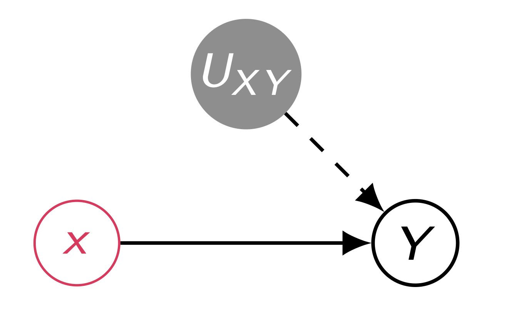

1 Overview
이번 포스트에서는 인과추론에서 가장 핵심적인 개념 중 하나인 교란(Confounding)과 이를 해결하기 위한 백도어 기준(Back-door Criterion)으로 나아가기 전, 식별 가능성(Identification Problem)에 대해 다시 한번 짚어보고자 합니다.
강의 자료는 서울대학교 데이터사이언스대학원 이상학 교수님의 “Confounding and Backdoor” 수업 자료를 바탕으로 합니다
1.1 목차
- Recap(Identification Problem) and Example of Identifiable and Non-identifiable Effects
- Confounding Bias
- Back-door Criterion
- Evaluation
2 Recap: Identification Problem
인과추론의 궁극적인 목표는 우리가 관측할 수 없는 인과 효과(Causal Effect), 즉 \(P(y|do(x))\)를 관측 가능한 데이터 \(P(v)\)와 가정한 인과 그래프(Causal Graph) \(G\)를 통해 계산해낼 수 있는지 확인하는 것입니다.
- Identifiable (식별 가능): 관측 분포 \(P(v)\)와 그래프 \(G\)가 주어졌을 때, 유일한 \(P(y|do(x))\)가 도출되는 경우.
- Non-identifiable (식별 불가능): 동일한 \(P(v)\)와 \(G\)를 만족함에도 불구하고, 서로 다른 \(P(y|do(x))\) 값을 갖는 모델이 두 개 이상 존재하는 경우
3 Example 1: Identifiable Effect
먼저, 인과 효과가 식별 가능한(Identifiable) 경우를 살펴보겠습니다. 아래와 같은 인과 그래프를 가정해 봅시다.

이 구조에서 관측 분포 \(P(v)\)는 다음과 같이 factorization 됩니다.
\[P(v) = P(z)P(x|z)P(y|x,z)\]

우리가 구하고자 하는 개입(Intervention) 분포 \(P(v'|do(x))\)는 \(x\)로 들어오는 화살표를 끊어낸 그래프에서의 분포이므로 다음과 같습니다
\[P(v'|do(x)) = P(z)P(y|x,z)\]
따라서, \(Y\)에 대한 Marginal Distribution를 구하면 Back-door Adjustment Formula와 동일한 결과를 얻게 됩니다.
\[P(y|do(x)) = \sum_{z} P(z)P(y|x,z)\]
이 식의 중요한 점은 우변의 모든 항(\(P(z)\), \(P(y|x,z)\))이 관측 데이터(Observational Data)로부터 추정할 수 있다는 것입니다. 즉, \(P(v)\)가 동일한 모든 모델은 \(P(y|do(x))\)에 대해서도 동일한 값을 내놓으므로, 이 효과는 식별 가능(Identifiable)합니다
4 Example 2: Non-identifiable Effect
그렇다면 식별 불가능한 경우는 어떤 모습일까요? 이를 증명하기 위해, 동일한 그래프와 동일한 관측 분포 \(P(v)\)를 가지지만, 서로 다른 인과 효과 \(P(y|do(x))\)를 나타내는 두 개의 모델(\(\mathcal{H}^{(1)}\), \(\mathcal{H}^{(2)}\))을 구성해 보겠습니다
4.1 설정 (Setup)
아래와 같은 “Bow-tie” 형태의 그래프를 고려합니다. 여기서 \(U_{XY}\)는 \(X\)와 \(Y\)에 동시에 영향을 주는 관측되지 않은 교란 변수(Unobserved Confounder)입니다.

두 모델 \(\mathcal{H}^{(1)}\)과 \(\mathcal{H}^{(2)}\)는 다음과 같은 구조적 방정식(Structural Equations)을 갖습니다. 여기서 \(U_Y, U_{XY}\)는 모두 베르누이 분포(동전 던지기, \(p=0.5\))를 따릅니다.
4.1.1 Model 1 (\(\mathcal{H}^{(1)}\))
\[ \begin{cases} X \leftarrow U_{XY} \\ Y \leftarrow (X \oplus U_{XY}) \lor U_Y \end{cases} \] * 여기서 \(\oplus\)는 XOR 연산, \(\lor\)는 OR 연산을 의미합니다.
4.1.2 Model 2 (\(\mathcal{H}^{(2)}\))
\[ \begin{cases} X \leftarrow U_{XY} \\ Y \leftarrow U_Y \end{cases} \] * 모델 2에서는 \(X\)가 \(Y\)에 아무런 영향을 주지 않습니다 (끊어진 인과 관계).
4.2 관측 분포의 일치 (Observational Equivalence)
놀랍게도 두 모델은 관측 데이터 상으로는 완벽하게 동일합니다.
Model 1의 경우: 구조 방정식을 보면 \(X\)는 \(U_{XY}\)와 같습니다. 따라서 \(X \oplus U_{XY}\)는 항상 \(0\)이 됩니다 (\(X\)와 \(U_{XY}\)가 같으므로). \[Y = 0 \lor U_Y = U_Y\] 결국 관측 환경에서는 \(Y\)가 오직 \(U_Y\)에 의해서만 결정됩니다
Model 2의 경우: 정의상 \(Y \leftarrow U_Y\)이므로, 역시 \(Y\)는 \(U_Y\)에 의해 결정됩니다.
결과적으로 두 모델 모두 \(P(Y=1) = P(U_Y=1) = 0.5\)이며, \(X\)와 \(Y\)의 결합 분포 표(Truth Table)도 완전히 일치합니다
| \(U_Y\) | \(U_{XY}\) (\(=X\)) | \(Y^{(1)}\) (Model 1) | \(Y^{(2)}\) (Model 2) | \(P(u)\) |
|---|---|---|---|---|
| 0 | 0 | 0 | 0 | 1/4 |
| 0 | 1 | 0 | 0 | 1/4 |
| 1 | 0 | 1 | 1 | 1/4 |
| 1 | 1 | 1 | 1 | 1/4 |
4.3 인과 효과의 불일치 (Interventional Differences)
이제 \(do(x)\) 연산을 통해 실제로 인과 효과를 계산해 보면 두 모델의 차이가 드러납니다. \(do(x)\)는 \(X\)를 강제로 특정 값으로 고정하는 것이므로, 더 이상 \(X\)는 \(U_{XY}\)의 영향을 받지 않습니다.

우리는 \(P(y=1 | do(x=0))\)을 계산해 보겠습니다
4.3.1 Case 1: Model \(\mathcal{H}^{(1)}\)
구조 방정식: \(Y \leftarrow (x \oplus U_{XY}) \lor U_Y\). 여기서 \(x=0\)으로 고정했습니다.
- \(U_{XY}=0, U_Y=0 \Rightarrow Y = (0 \oplus 0) \lor 0 = 0\)
- \(U_{XY}=0, U_Y=1 \Rightarrow Y = (0 \oplus 0) \lor 1 = 1\) (\(U_Y=1\) 이면 어차피 \(Y=1\))
- \(U_{XY}=1, U_Y=0 \Rightarrow Y = (0 \oplus 1) \lor 0 = 1\) (\(U_{XY}=1 \nRightarrow X=1\) 이므로, 여기서 차이 발생!)
- \(U_{XY}=1, U_Y=1 \Rightarrow Y = (0 \oplus 1) \lor 1 = 1\) (\(U_Y=1\) 이면 어차피 \(Y=1\))
4가지 경우 중 3가지 경우에 \(Y=1\)이 됩니다. \[\therefore P^{(1)}(y=1|do(x=0)) = \frac{3}{4}\]
4.3.2 Case 2: Model \(\mathcal{H}^{(2)}\)
구조 방정식: \(Y \leftarrow U_Y\). \(X\)의 값과 상관없이 \(Y\)는 \(U_Y\)를 따릅니다.
- \(U_Y=0 \Rightarrow Y=0\)
- \(U_Y=1 \Rightarrow Y=1\)
\[\therefore P^{(2)}(y=1|do(x=0)) = \frac{1}{2}\]
4.4 결론
| \(Y\) | \(P^{(1)}(Y|do(x))\) | \(P^{(2)}(Y|do(x))\) |
|---|---|---|
| 0 | \(\frac{1}{4}\) | \(\frac{1}{2}\) |
| 1 | \(\frac{3}{4}\) | \(\frac{1}{2}\) |
두 모델은 동일한 인과 그래프와 동일한 관측 분포 \(P(v)\)를 가지지만, 계산된 인과 효과 \(P(y|do(x))\)는 \(\frac{3}{4}\)와 \(\frac{1}{2}\)로 서로 다릅니다
Even though both models induce \(I\) (Graph) and have the same \(P(v)\), the effect \(P^{(1)}(y|do(x)) \neq P^{(2)}(y|do(x))\).
이는 주어진 그래프 구조(Unobserved Confounder가 존재하는 경우)만으로는 데이터에서 인과 효과를 유일하게 식별해낼 수 없음을(Non-identifiable) 의미합니다. 이러한 경우, 추가적인 가정이나 데이터를 통한 식별 전략이 필요합니다.